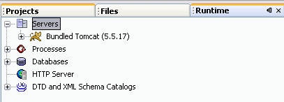
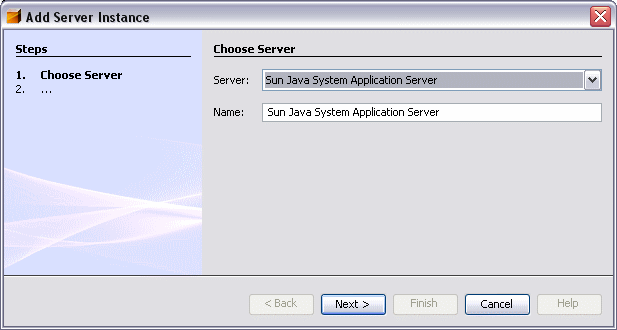
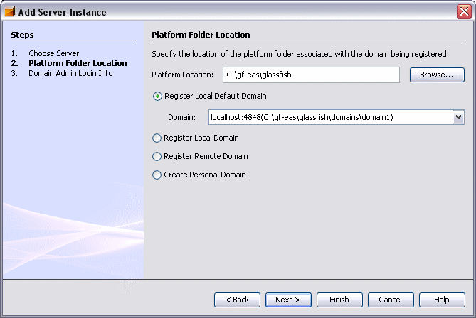
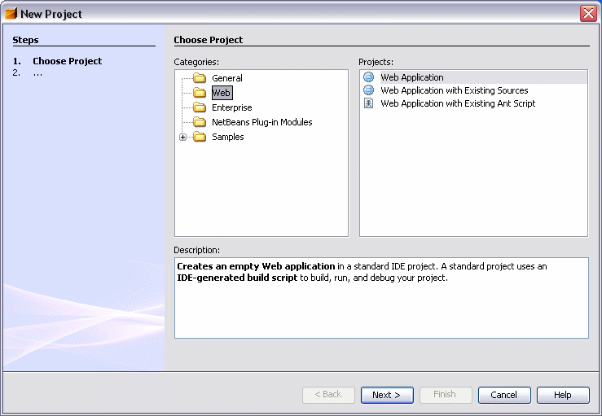
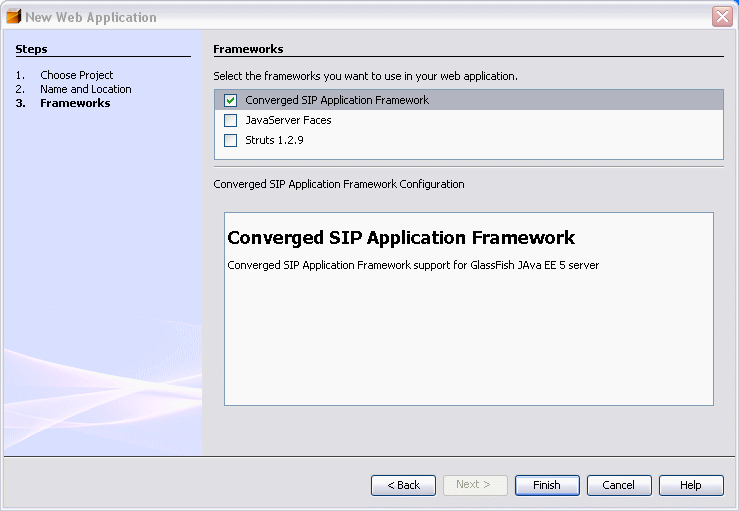
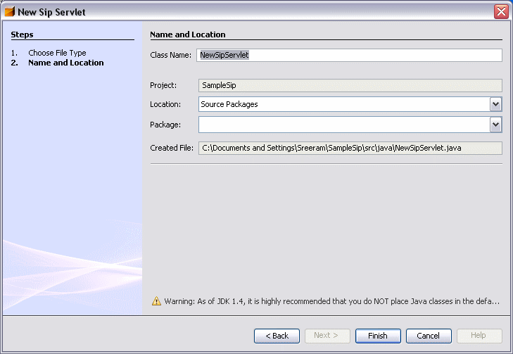
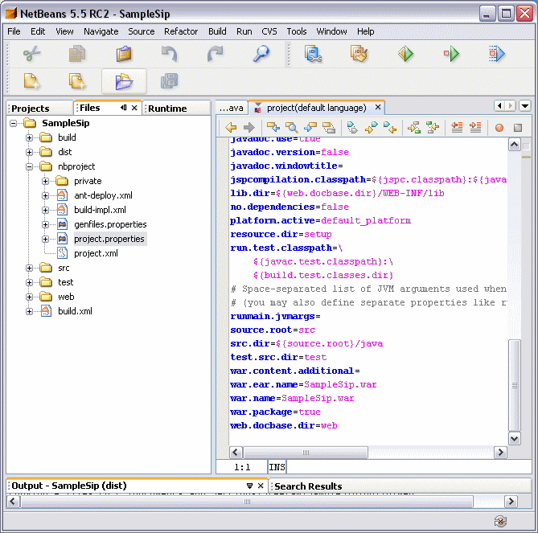
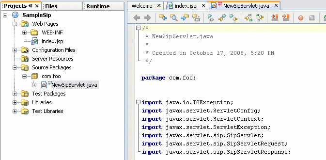
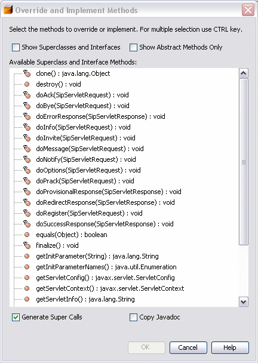

Using NetBeans 5.5.1 to develop SIP and Java EE Applications
THIS DOCUMENT IS DEPRECATED.
Follow this link to find out about the 'Sip Application Development Module
for NetBeans 6.0' project. Follow this link for
instructions on installing
the SIP App Development Module into NetBeans 6.0.
Version 0.1, Date: 17 Oct 2006
Download the NetBeans NBM file.
This document describes how to get started with using NetBeans for
developing Converged applications using Java EE 5 and SIP Servlets. We
are describing this for Windows. Roughly same instructions will work on
any platform.
- Download NetBeans 5.5.1 from
http://www.netbeans.org .(Remember that NetBeans 5.5 does not work with GlassFish V2.)
- Choose any install location. Choose a JVM whose version is at
least 1.5.06 preferably 1.5.08. Start up NetBeans. We will now configure
NetBeans to point to the Sip enabled Glassfish evaluation distribution,
that you should already have installed on your machine.
- Click on Runtime tab and expand Servers. You should only see the
default Tomcat. We will add GlassFish now.

- Right Click on Servers and choose Add Server. By default it
selects Sun Java System Application
Server in the drop down menu list.

Click Next
- Now we pick the server location

Use Browse to point to the
install location for your evaluation bundle. It should be some
directory called Glassfish. Keep the default, which picks a domain
called domain1 (created by default, change it only if your domain was
somehow differently named). Click Finish.
[If you click Next,
you will be prompted for Administration username and password. These
are defaulted to admin/adminadmin, if you hit Finish.]
Now the Server is registered. You should see Sun Java System
Application Server under Servers.
- Right click with the mouse on Sun
Java System Application Server and choose Start. This starts up the
Application Server.
Installing Sip Application Development Support Plugin
At the top level of your evaluation bundle install, you should see:
org-netbeans-modules-sun-sip.nbm. This is the Plugin that needs to be
configured as follows:
- Choose Module Manager
user Tools Menu item.
- Click on Update button
at bottom. You will see the Update Center Wizard.
- Choose the radio button Install
manually downloaded modules (.nbm files). Click Next
- Click on Add. Use the
File Browser to find org-netbeans-modules-sun-sip.nbm file on
your system. Click OK
- Click Next
- Click Next
- You will see an Empty License. Click Accept
- You will see a successful Verification. Clock Next
- You will be shown a message that the module is unsigned. Just
click on checkbox and agree that you are okay with this. Hit Finish
- IDE may need to be restarted. Click OK, if prompted.
- You are now set up with Sip development capability
This NetBeans plugin allows Sip Archives to be developed. Sip Archives
are developed as Web Applications that use the Sip Servlets Framework.
This is similar to how web applications use JSF framework. We will show
how to do one in a while.
Developing Sip enabled Web Applications
- Click on File Menu and
choose New Project

Choose Web and Web Application. Click Next
- Assign the name SampleSip to
project. Click Next
- On next screen, choose
Converged Sip Application Framework checkbox. Click Next

Adding Sip Servlets
- To begin writing code, you need to right click with the mouse on
the just created project (SampleSip under Projects tab) and choose New
- You will not see Sip Servlet yet since NetBeans does not place on
the default palette of components. So only for the first time, go to
File/Folder under the list that New will show you.
- Choose Sip Servlet from there. You will be prompted for a package
name, servlet name and so on. Hit Finish.
A Sip Servlet will be added to the project

- You can also add Http Servlets, create Entity classes just as you
would with any Java EE 5 Web Application. You can use the standard Java
EE 5 annotations in Sip Servlets
- You can build, deploy, debug and run your application on
GlassFish (Sun Java System Application Server), just as you would
normally by using the Right Mouse Click on Project to access all common
actions.
Limitations
- When you build a converged web application, a SIP Archive
(foo.sar) must be created. NetBeans is still creating a out file with
war extension. It is easy to change it. Click on Files Tab. And click
on project.properties. You will see the file opened for editing on
right side.

- Change war.name to SampleSip.sar or whatever your project name
happens to be. Save and Build Project again. You can also produce a war
file and just rename it with OS commands before you deploy it.
- When a SIP Servlet is created only some method templates are
added. Delete what you do not need. To add other methods that you wish
to override, do the following. We added NewSipServlet under com.foo in
previous step.
- Choose NewSipServlet in the sources.

- When it is highlighted, choose Source menu item from top menu
bar. Choose Override Methods (Ctrl+I shortcut). You will be shown
methods ofSipServlet that you can override.
- In future, we will extend the Sip Servlet creation wizard to let
developer choose the method and click OK.

- sip.xml is created but it is not populated automatically after a
Sip Servlet is added. This has to be done manually in NetBeans editor.
However NetBeans will assist in XML completion and validation checks.
The automatic creation and population will be added soon.